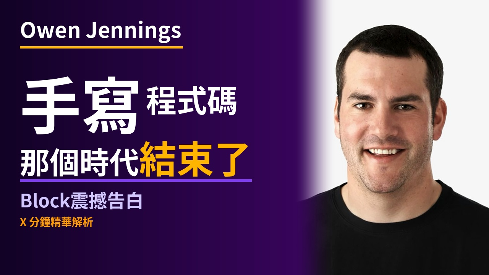

← Stage 索引更新：
94iVoice — block_ai ⏳ 草稿審閱中
📋 草稿審閱
請確認以下三件事，確認後開始製作：
1️⃣ 腳本方向 — 內容 OK？有需要修改的地方嗎？
2️⃣ 封面文案 — 選擇 A / B / C 哪個版本？
3️⃣ 背景圖生成方式 — (D) DALL-E 3 自動生成 / (G) Google Imagen 4 生成
請確認以下三件事，確認後開始製作：
1️⃣ 腳本方向 — 內容 OK？有需要修改的地方嗎？
2️⃣ 封面文案 — 選擇 A / B / C 哪個版本？
3️⃣ 背景圖生成方式 — (D) DALL-E 3 自動生成 / (G) Google Imagen 4 生成
🖼 YouTube 封面提案
三版封面設計供參考，回覆選擇 A / B / C
提案 A
提案 B

提案 C

🖼 章節背景圖
00開場0:00 → 0:48
0:00 ✓ 已生成
大樓辦公室空曠走道，桌上散落著員工識別牌和未清的個人物品，窗外城市夜景，冷藍燈光，空曠中透著剛發生的震盪感
01裁員的決定0:48 → 2:41
【裁員的決定】標題卡
0:48 📌 標題卡
【裁員的決定】標題卡
0:50 ✓ 已生成
大型會議室，高管圍坐長桌，白板上寫著組織架構圖，自然光，嚴肅而專注的決策氛圍
1:23 ✓ 已生成
電腦螢幕特寫，AI 程式碼自動生成，游標快速跳動，深夜辦公室，螢幕藍光打在臉上
02AI 怎麼改變了開發方式2:41 → 4:28
【AI 怎麼改變了開發方式】標題卡
2:41 📌 標題卡
【AI 怎麼改變了開發方式】標題卡
2:43 ✓ 已生成
小型會議室，三個人圍著筆電，螢幕上滿是程式碼視窗，茶杯旁邊散落著便條紙，自然採光
3:33 ✓ 已生成
伺服器機房走廊，綠色狀態燈閃爍，多個程序並行跑動的視覺化面板，無人在場，自動化感
03不只是工程師的故事4:28 → 5:51
【不只是工程師的故事】標題卡
4:28 📌 標題卡
【不只是工程師的故事】標題卡
4:30 ✓ 已生成
開放式辦公室，一個人對著多個螢幕，旁邊有設計稿和便利貼，暖黃辦公燈光
4:42 ✓ 已生成
一個人坐在電腦前，投射畫面顯示十幾個工作視窗同時進行，人在中間切換查看，深夜辦公室，距離感
04生成式 UI 的未來5:51 → 7:03
【生成式 UI 的未來】標題卡
5:51 📌 標題卡
【生成式 UI 的未來】標題卡
5:53 ✓ 已生成
一個人拿著手機，螢幕上顯示色彩繽紛的個人化 App 界面，背景是模糊的咖啡廳，溫暖自然光
6:45 ✓ 已生成
小型連鎖餐廳廚房，老闆拿著平板看排班表，員工在後台忙碌，暖黃燈光
05最後的護城河7:03 → 9:13
【最後的護城河】標題卡
7:03 📌 標題卡
【最後的護城河】標題卡
7:05 ✓ 已生成
一個人站在高樓落地窗前，俯瞰城市，背手沉思，窗外是晴天的城市全景，自然光
8:20 ✓ 已生成
工廠內蒸汽機時代的老照片風格，工人與機器並肩，新舊並置的對比，暖棕色調，象徵技術革命但總量反增
06裁員之後9:13 → 10:30
【裁員之後】標題卡
9:13 📌 標題卡
【裁員之後】標題卡
9:15 ✓ 已生成
股票交易螢幕特寫，數字大幅跳升，綠色箭頭，交易員表情緊繃，強烈對比燈光
9:37 ✓ 已生成
辦公室外的街道，一個拿著紙箱的人走出大樓，身後是玻璃帷幕，冷灰色天空
✍️ 中文腳本
載入中...
🔊 TTS 發音稿
（草稿階段尚未產生，確認腳本後製作）
{kind=link}
{kind=link}